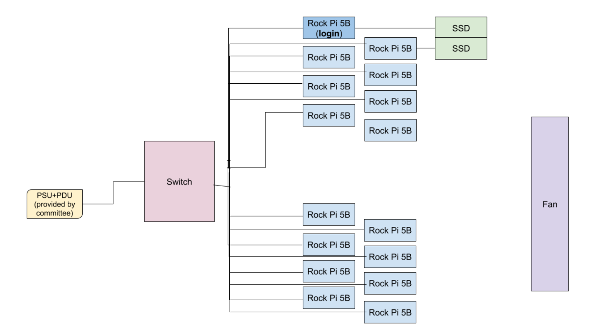

The Single-Board Cluster Competition (SBCC) is a competition where teams from all around the world compete using single-board devices, and other similarly simple hardware, to create miniature supercomputing clusters.
Architecture Diagram

Hardware
16 Rock 5Bs
Each is connected to Unifi2Standard 48 ethernet switch via a cat6 ethernet cable.
Each is connected to an extension cord by USB-C power supply. Extension cords will be connected to PSU+PDU.
For oMPI compatibility, every Rock 5B will be able to SSH into each other before we get to the competition, saving us competition time.
2x MV-V7E500 500GB SSDs (1 TB total)
1 SSD will be on the login node, while the other will be on a different node (we may call this the secondary login node)
Cluster compute structure: Primary access through a login node structure, which will have important storage/accessories locally connected (vs. virtual access).
Software
Filesystem & Storage
SSDs will be configured with RAID0 for better read/write speeds
Network File System (NFS) will be used to share files across all nodes
Networking
We will use the pre-configured network settings on the switch
Sysadmin, OS, and Setup
The cluster will run on Debian, using an official image from Radxa.
We will set up users and privileges through Ansible:
Standardize our setup process, including building on playbooks developed for club hardware and projects.
A convenient way to set up the preliminary software stack.
This will allow us to easily reset any system without repercussion if we need to reset a system.
We will follow standard processes, like disabling password-based logins (among other choices), to ensure cluster security.
GCC compiler.
Spack to manage and install dependencies for all users.
Grafana dashboard to profile cluster.
Prometheus and Docker to query data from the provided PDU.
Application and Benchmark Specific Dependencies
STREAM: stream_mpi in Fortran or C, ssh config, mpicc, mpirun
Hashcat: libOpenCL on POCL
Distributed Large Language Model Meta AI (D-LLAMA): git, Python 3
High Performance Linpack (HPL): Standard BLAS implementation, as there are no vendor-optimized versions of this library